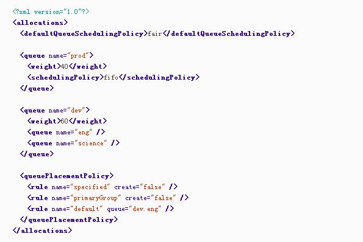

Yarn调度器Scheduler详解
理想情况下，我们应用对Yarn资源的请求应该立刻得到满足，但现实情况资源往往是有限的，特别是在一个很繁忙的集群，一个应用资源的请求经常需要等待一段时间才能的到相应的资源。在Yarn中，负责给应用分配资源的就是Scheduler。其实调度本身就是一个难题，很难找到一个完美的策略可以解决所有的应用场景。为此，Yarn提供了多种调度器和可配置的策略供我们选择。
一、调度器的选择
在Yarn中有三种调度器可以选择：FIFO Scheduler ，Capacity Scheduler，FairS cheduler。
FIFO Scheduler把应用按提交的顺序排成一个队列，这是一个先进先出队列，在进行资源分配的时候，先给队列中最头上的应用进行分配资源，待最头上的应用需求满足后再给下一个分配，以此类推。
FIFO Scheduler是最简单也是最容易理解的调度器，也不需要任何配置，但它并不适用于共享集群。大的应用可能会占用所有集群资源，这就导致其它应用被阻塞。在共享集群中，更适合采用Capacity Scheduler或Fair Scheduler，这两个调度器都允许大任务和小任务在提交的同时获得一定的系统资源。
下面“Yarn调度器对比图”展示了这几个调度器的区别，从图中可以看出，在FIFO 调度器中，小任务会被大任务阻塞。
而对于Capacity调度器，有一个专门的队列用来运行小任务，但是为小任务专门设置一个队列会预先占用一定的集群资源，这就导致大任务的执行时间会落后于使用FIFO调度器时的时间。
在Fair调度器中，我们不需要预先占用一定的系统资源，Fair调度器会为所有运行的job动态的调整系统资源。如下图所示，当第一个大job提交时，只有这一个job在运行，此时它获得了所有集群资源；当第二个小任务提交后，Fair调度器会分配一半资源给这个小任务，让这两个任务公平的共享集群资源。
需要注意的是，在下图Fair调度器中，从第二个任务提交到获得资源会有一定的延迟，因为它需要等待第一个任务释放占用的Container。小任务执行完成之后也会释放自己占用的资源，大任务又获得了全部的系统资源。最终的效果就是Fair调度器即得到了高的资源利用率又能保证小任务及时完成。
Yarn调度器对比图:

二、Capacity Scheduler（容器调度器）的配置
2.1 容器调度介绍
Capacity 调度器允许多个组织共享整个集群，每个组织可以获得集群的一部分计算能力。通过为每个组织分配专门的队列，然后再为每个队列分配一定的集群资源，这样整个集群就可以通过设置多个队列的方式给多个组织提供服务了。除此之外，队列内部又可以垂直划分，这样一个组织内部的多个成员就可以共享这个队列资源了，在一个队列内部，资源的调度是采用的是先进先出(FIFO)策略。
通过上面那幅图，我们已经知道一个job可能使用不了整个队列的资源。然而如果这个队列中运行多个job，如果这个队列的资源够用，那么就分配给这些job，如果这个队列的资源不够用了呢？其实Capacity调度器仍可能分配额外的资源给这个队列，这就是“弹性队列”(queue elasticity)的概念。
在正常的操作中，Capacity调度器不会强制释放Container，当一个队列资源不够用时，这个队列只能获得其它队列释放后的Container资源。当然，我们可以为队列设置一个最大资源使用量，以免这个队列过多的占用空闲资源，导致其它队列无法使用这些空闲资源，这就是”弹性队列”需要权衡的地方。
2.2 容器调度的配置
假设我们有如下层次的队列：
root
├── prod
└── dev
├── eng
└── science
下面是一个简单的Capacity调度器的配置文件，文件名为capacity-scheduler.xml。在这个配置中，在root队列下面定义了两个子队列prod和dev，分别占40%和60%的容量。需要注意，一个队列的配置是通过属性yarn.sheduler.capacity.

我们可以看到，dev队列又被分成了eng和science两个相同容量的子队列。dev的maximum-capacity属性被设置成了75%，所以即使prod队列完全空闲dev也不会占用全部集群资源，也就是说，prod队列仍有25%的可用资源用来应急。我们注意到，eng和science两个队列没有设置maximum-capacity属性，也就是说eng或science队列中的job可能会用到整个dev队列的所有资源（最多为集群的75%）。而类似的，prod由于没有设置maximum-capacity属性，它有可能会占用集群全部资源。
Capacity容器除了可以配置队列及其容量外，我们还可以配置一个用户或应用可以分配的最大资源数量、可以同时运行多少应用、队列的ACL认证等。
2.3 队列的设置
关于队列的设置，这取决于我们具体的应用。比如，在MapReduce中，我们可以通过mapreduce.job.queuename属性指定要用的队列。如果队列不存在，我们在提交任务时就会收到错误。如果我们没有定义任何队列，所有的应用将会放在一个default队列中。
注意：对于Capacity调度器，我们的队列名必须是队列树中的最后一部分，如果我们使用队列树则不会被识别。比如，在上面配置中，我们使用prod和eng作为队列名是可以的，但是如果我们用root.dev.eng或者dev.eng是无效的。
三、Fair Scheduler（公平调度器）的配置
3.1 公平调度
Fair调度器的设计目标是为所有的应用分配公平的资源（对公平的定义可以通过参数来设置）。在上面的“Yarn调度器对比图”展示了一个队列中两个应用的公平调度；当然，公平调度在也可以在多个队列间工作。举个例子，假设有两个用户A和B，他们分别拥有一个队列。当A启动一个job而B没有任务时，A会获得全部集群资源；当B启动一个job后，A的job会继续运行，不过一会儿之后两个任务会各自获得一半的集群资源。如果此时B再启动第二个job并且其它job还在运行，则它将会和B的第一个job共享B这个队列的资源，也就是B的两个job会用于四分之一的集群资源，而A的job仍然用于集群一半的资源，结果就是资源最终在两个用户之间平等的共享。过程如下图所示：

3.2 启用Fair Scheduler
调度器的使用是通过yarn-site.xml配置文件中的yarn.resourcemanager.scheduler.class参数进行配置的，默认采用Capacity Scheduler调度器。如果我们要使用Fair调度器，需要在这个参数上配置FairScheduler类的全限定名： org.apache.hadoop.yarn.server.resourcemanager.scheduler.fair.FairScheduler。
3.3 队列的配置
Fair调度器的配置文件位于类路径下的fair-scheduler.xml文件中，这个路径可以通过yarn.scheduler.fair.allocation.file属性进行修改。若没有这个配置文件，Fair调度器采用的分配策略，这个策略和3.1节介绍的类似：调度器会在用户提交第一个应用时为其自动创建一个队列，队列的名字就是用户名，所有的应用都会被分配到相应的用户队列中。
我们可以在配置文件中配置每一个队列，并且可以像Capacity 调度器一样分层次配置队列。比如，参考capacity-scheduler.xml来配置fair-scheduler：

队列的层次是通过嵌套
Fair调度器中的队列有一个权重属性（这个权重就是对公平的定义），并把这个属性作为公平调度的依据。在这个例子中，当调度器分配集群40:60资源给prod和dev时便视作公平，eng和science队列没有定义权重，则会被平均分配。这里的权重并不是百分比，我们把上面的40和60分别替换成2和3，效果也是一样的。注意，对于在没有配置文件时按用户自动创建的队列，它们仍有权重并且权重值为1。
每个队列内部仍可以有不同的调度策略。队列的默认调度策略可以通过顶级元素
尽管是Fair调度器，其仍支持在队列级别进行FIFO调度。每个队列的调度策略可以被其内部的
尽管上面的配置中没有展示，每个队列仍可配置最大、最小资源占用数和最大可运行的应用的数量。
3.4 队列的设置
Fair调度器采用了一套基于规则的系统来确定应用应该放到哪个队列。在上面的例子中，
当然，我们可以不配置queuePlacementPolicy规则，调度器则默认采用如下规则：
<queuePlacementPolicy>
<rule name="specified" />
<rule name="user" />
</queuePlacementPolicy>
上面规则可以归结成一句话，除非队列被准确的定义，否则会以用户名为队列名创建队列。
还有一个简单的配置策略可以使得所有的应用放入同一个队列（default），这样就可以让所有应用之间平等共享集群而不是在用户之间。这个配置的定义如下：
<queuePlacementPolicy>
<rule name="default" />
</queuePlacementPolicy>
实现上面功能我们还可以不使用配置文件，直接设置yarn.scheduler.fair.user-as-default-queue=false，这样应用便会被放入default 队列，而不是各个用户名队列。另外，我们还可以设置yarn.scheduler.fair.allow-undeclared-pools=false，这样用户就无法创建队列了。
3.5 抢占（Preemption）
当一个job提交到一个繁忙集群中的空队列时，job并不会马上执行，而是阻塞直到正在运行的job释放系统资源。为了使提交job的执行时间更具预测性（可以设置等待的超时时间），Fair调度器支持抢占。
抢占就是允许调度器杀掉占用超过其应占份额资源队列的containers，这些containers资源便可被分配到应该享有这些份额资源的队列中。需要注意抢占会降低集群的执行效率，因为被终止的containers需要被重新执行。
可以通过设置一个全局的参数yarn.scheduler.fair.preemption=true来启用抢占功能。此外，还有两个参数用来控制抢占的过期时间（这两个参数默认没有配置，需要至少配置一个来允许抢占Container）：
- minimum share preemption timeout
- fair share preemption timeout
如果队列在minimum share preemption timeout指定的时间内未获得最小的资源保障，调度器就会抢占containers。我们可以通过配置文件中的顶级元素
与之类似，如果队列在fair share preemption timeout指定时间内未获得平等的资源的一半（这个比例可以配置），调度器则会进行抢占containers。这个超时时间可以通过顶级元素